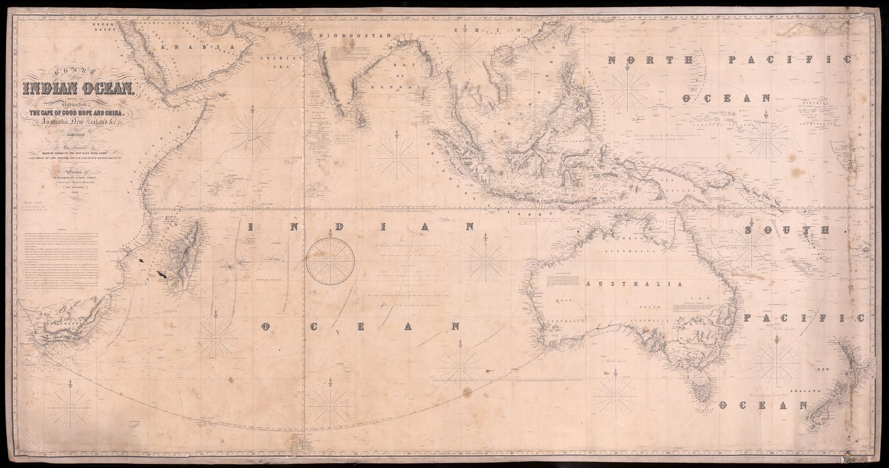

A working chart
James Imray published charts for merchant shipping rather than for the atlas cabinet. Backed with blue manila paper for strength, sheets of this kind were handled, folded, marked and corrected aboard ship. Soundings, reefs, banks, anchorages, routes and compass information take precedence over territorial detail.
Survey knowledge pooled
The chart advertises compilation from approved authorities, including East India Company and British, French and Dutch hydrographic work. Rival imperial surveys become shared navigational infrastructure once absorbed into a commercial chart for mariners.
The ocean made operational
Earlier charts in the collection imagine or claim the route to India. Here the ocean is densely worked: hazards fixed, approaches described and long passages converted into practical choices. India is one coast within a connected maritime system extending from the Cape to East Asia and Australia.
The gaze
Imray’s chart was meant to be worn out. The blue backing, the folding and the corrections made aboard ship set it apart from every framed or bound map in this collection, and the soundings of rival navies lose their nationality once a master needs them to clear a bank. India occupies a single stretch of coast on a sheet whose real subject is the passage.